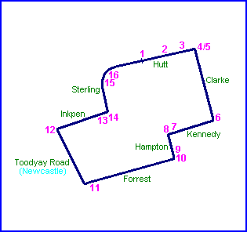
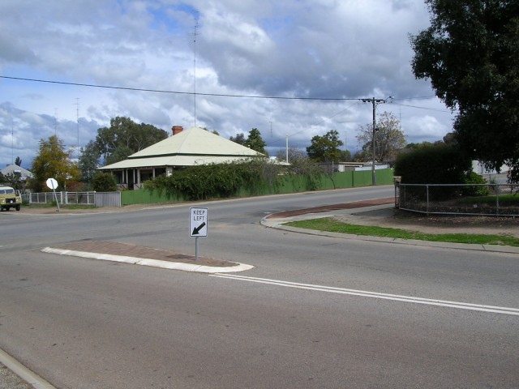
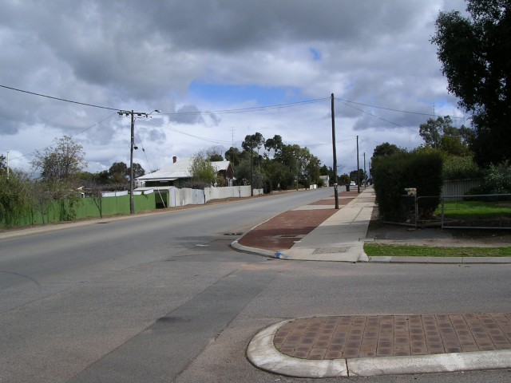
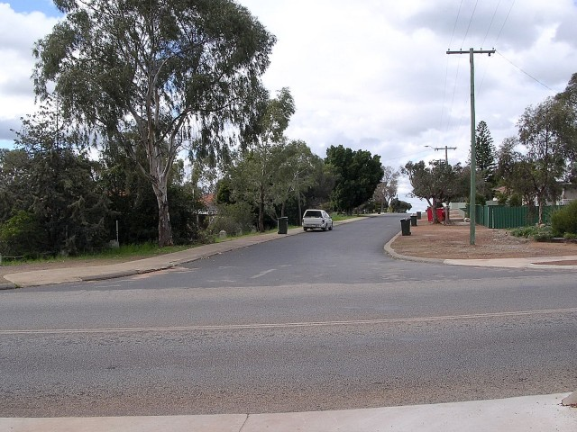
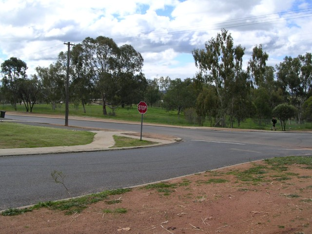
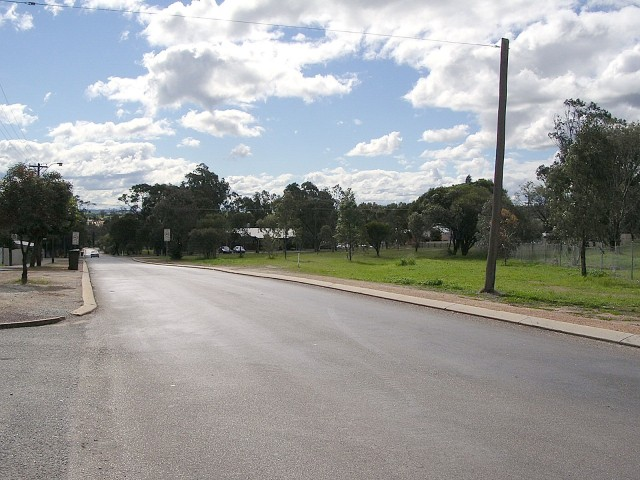
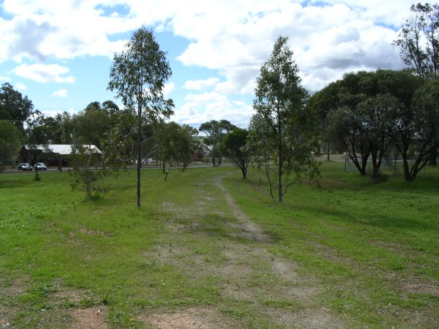
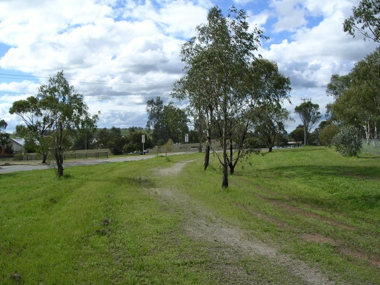

11 - Forrest Street. Turn right into Newcastle Road [Toodyay Rd.]
Northam (North Circuit) - Forrest via Toodyay/Newcastle and Inkpen to Stirling
|| Contents || Hutt / Clarke / Kennedy / Hampton | Forrest / Toodyay / Inkpen / Stirling || Home ||

Numbers on the map represent the location where the photographs were taken. Scroll
down to view the photographs.
Return to racingcircuits.net's Photo Archive Main Index

9 - Entry of right turn into Forrest Street
from Hampton Street.

10 - Exit of right turn into Forrest Street
from Hampton Street.
11 - Forrest Street. Turn right into
Newcastle Road [Toodyay Rd.]

12 - Turn right from Newcastle Road into
Inkpen Street.

13 - Turn left from Inkpen Street into
Stirling Street.

14 - The road used to sweep right into Hutt
Street.

15

16 - Exit of right hand sweep into Hutt
Street
Photographs and Text ©Neil Fackerell. Reproduced here with kind permission.